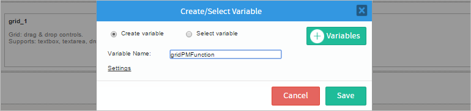
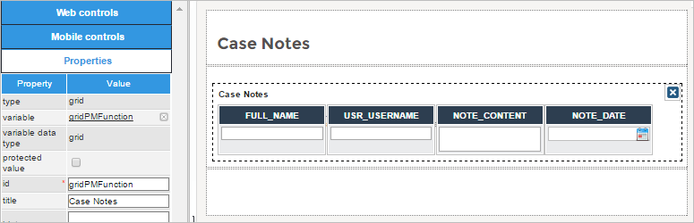
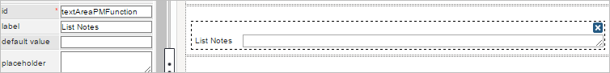

- 1. Overview
- 2. Process Functions
- 3. Task Functions
- 4. Dynaform and Field Functions
- 5. Case Functions
- 6. Case Routing Functions
- 7. Case Notes Functions
- 8. User Functions
- 9. Group Functions
- 10. Email Functions
- 11. Document Functions
- 12. Unique ID Functions
- 13. Date Functions
- 14. String Functions
- 15. Database Functions
- 16. Grid Functions
Case Notes Functions
These functions pertain to the Case Notes features.
PMFAddCaseNote()
PMFAddCaseNote() adds a case note to a specified case.
Note: To use this function in the process, you must assign the correct Case Notes Process Permissions. Otherwise the function does not add the desired case note.
Parameters:
- string caseUID: Required. The unique ID of the case, which can be found in the following ways:
- Use the
@@APPLICATIONsystem variable to get the unique ID of the current case. - Use the PMFCaseList(), WSCaseList() or the caseList() web service.
- Use the
- string processUID: Required. The unique ID of the process, which can be found in the following ways:
- For the current process, use the
@@PROCESSsystem variable. - Use executeQuery() to look up the unique ID in the wf_<WORKSPACE>.PROCESS.PRO_UID field.
- For the current process, use the
- string taskUID: Required. The unique ID of the task, which can be found in the following ways:
- Use the
@@TASKsystem variable to get the unique ID of the current task. - Use the PMFTaskList() function or taskList() web service.
- Query the wf_<WORKSPACE>.TASK.TAS_UID field in the database or get the starting task of the current process with the following query:
executeQuery("SELECT TAS_UID FROM TASK WHERE PRO_UID='" . @@PROCESS . "' AND TAS_START='TRUE'");
- Use the
- string userUID: Required. The unique ID of the user who will add the case note. Note that it is NOT possible to include the UID of more than one user.
- string note: Required. Note of the case.
- int sendMail: Optional. If set to 1, will send an email to all participants in the case.
- array aAttachments: Optional. Available Version: As of ProcessMaker 3.5.0
An array of complete paths of files to attach to the case note. When a file is attached using this function, it is stored in the case file folder caseNoteFiles. The paths can be in the file system of the server where ProcessMaker is installed. For example:By default, files are attached using their original file names.
If sending files stored by ProcessMaker, it is recommended to use ProcessMaker's predefined system constants, such as
PATH_DOCUMENTandPATH_SEP, to construct the paths:- Uploaded Input Document files and attached files:
PATH_DOCUMENT . $g->getPathFromUID("<CASE-UID>") . PATH_SEP . "<CASE-DOC-UID>_<VERSION>.<EXTENSION>"
Example:
PATH_DOCUMENT . $g->getPathFromUID(@@APPLICATION) . PATH_SEP . "9743702654e6925b52e1e34098864192_1.png"
- Generated Output Document files:
PATH_DOCUMENT . $g->getPathFromUID("<CASE-UID>") . PATH_SEP . "outdocs" . PATH_SEP . "<CASE-DOC-UID>_<VERSION>.<EXTENSION>"
Example:
PATH_DOCUMENT . $g->getPathFromUID(@@APPLICATION) . PATH_SEP . "outdocs" . PATH_SEP ."6960198894e6927e0a40b14004833875_2.pdf"
- Uploaded Input Document files and attached files:
Return Value:
Returns 1 if the note has been successfully added to the case, otherwise returns 0 if an error has occurred.
Example:
Note: It is possible to use case or system variables in the text of the case note. The following example inserts the resolution number, which is a value from a Dynaform field, into the text of the case note:
PMFGetCaseNotes()
PMFGetCaseNotes() returns a list of the case notes posted to a specified case.
Parameters:
- string applicationUID: The unique ID of a case, which can be obtained in the following ways:
- For the current case, use the system variable
@@APPLICATION. - Use PMFCaseList(), WSCaseList() or the caseList() web service.
- Use executeQuery() to query the wf_<WORKSPACE>.APPLICATION.APP_UID or wf_<WORKSPACE>.APP_DELEGATION.APP_UID fields in the database
- For the current case, use the system variable
- string type: Optional parameter. Set to
'array'if the result will be displayed in a grid. Set to'string'to return a string, which can be displayed in a textarea field. The default value is'array'. - string userUID: Optional parameter. To return the case notes posted by a single user, set to the unique ID of that user. If no user ID is specified, then it will return the case notes from all users. For the currently logged-in user, use the
@@USER_LOGGEDsystem variable.Note: It's not possible to define more than one user ID in the last parameter.
Return Value:
If the type is set to 'array', then this function returns an array of associative arrays with the following structure:
YYYY-MM-DD HH:MM:SS format.
string ['NOTE_CONTENT']: The content of the case note.
string ['NOTE_TYPE']: The type of the case note.
string ['NOTE_AVAILABILITY']: The type of availability of the case note.
string ['NOTE_RECIPIENTS']: The users who got the note by notification.
string ['USR_USERNAME']: The username of the user who created the case note.
)
...
Note that the counting of the array starts from 1, not 0.
If the $type is set to 'string', then this function returns a string that includes the name and username of the user who posted the case note, the content of the case note, and the date-time when posted:
NOTE_CONTENT is in HTML format so a string like "¡güéro!" becomes "¡güéro!". This text can be displayed without problem inside a panel, but to display this text correctly inside an input field, use the html_entities_decode() function to convert it to the UTF-8 character set. See the examples below.Showing Case Notes in a Grid
Create a Dynaform and inside it add a grid. When dropping the Grid element, create a new variable named gridPMFunction that is associated to the grid.

Add the following controls inside the grid:
- A Textbox with id:
FULL_NAME. - A Textbox with id:
USR_USERNAME. - A Textarea with id:
NOTE_CONTENT - A Datetime control with id:
NOTE_DATE

Save the changes and close the Dynaform. Then, create the following custom trigger:
for ($i = 1; $i <= count(@=gridPMFunction); $i++) {
@=gridPMFunction[$i]['NOTE_CONTENT'] = html_entity_decode(@=gridPMFunction[$i]['NOTE_CONTENT'],
ENT_QUOTES, 'UTF-8');
}
In this example, the case notes from all users in the current case are returned in an array which is assigned to the @=gridPMFunction variable which is associated with a grid in the subsequent Dynaform. Note that the last parameter of the PMFGetCaseNotes() function is an empty string, so it will return the case notes created by all users.
Then, the code loops through each element in the @=gridPMFunction array and calls html_entity_decode() to converts the text in the ['NOTE_CONTENT'] elements from HTML to UTF-8 text.
Assign the above trigger to be executed before the Dynaform and the results will be shown in the grid:

In this example, the trigger was executed in the process's second task, so all case notes added in both the first and second tasks will be displayed in the grid.
Showing Case Notes in a Textbox
Create a Dynaform that has a Textarea control with a variable called textAreaPMFunction.

Then create a trigger as follows:
Where:
P@@textAreaPMFunction: name of the textarea added to the Dynaform and where the results will be shown.@@APPLICATION: UID of the current process.string: the results. In the example, the results will be shown in a textarea.
The last parameter is empty, so it will display all the case notes created by the users.
Assign the trigger before the Dynaform. The result will be: